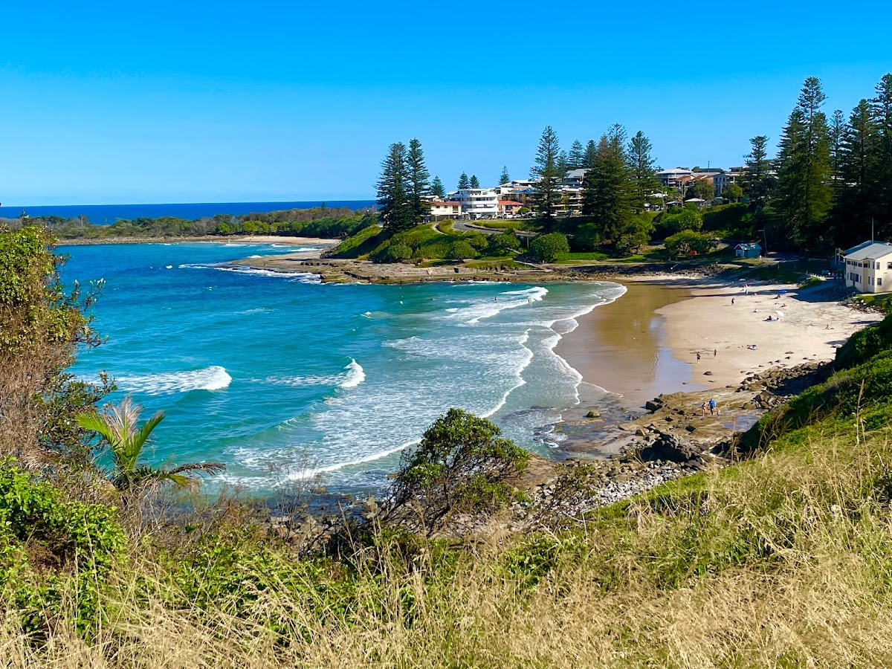
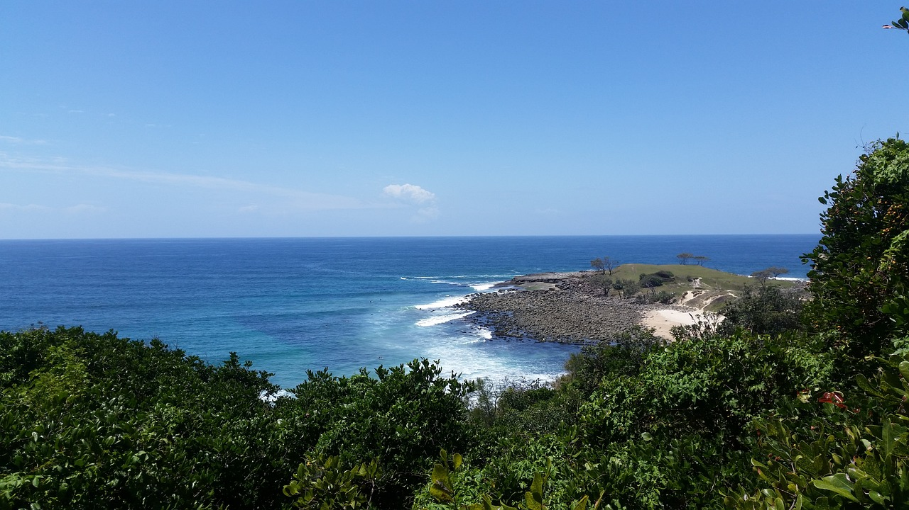
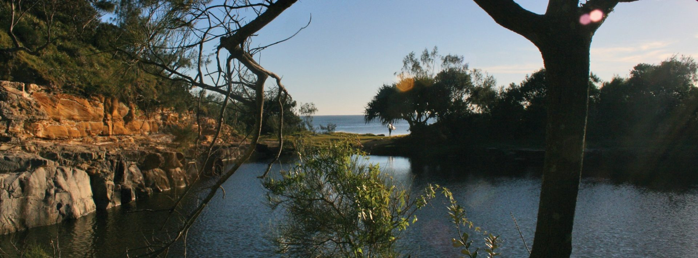
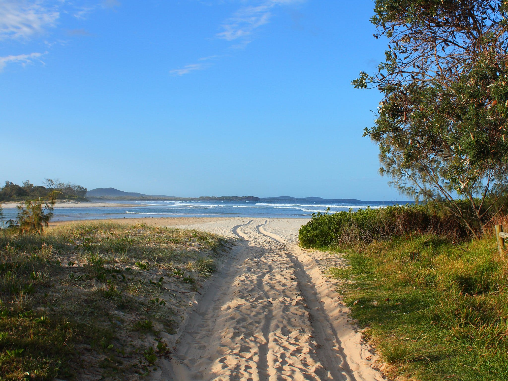
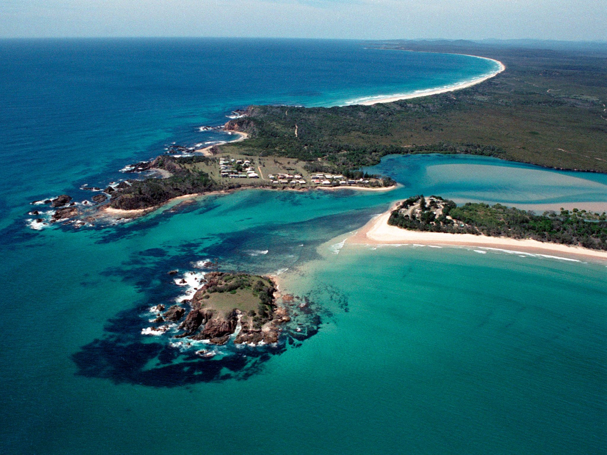
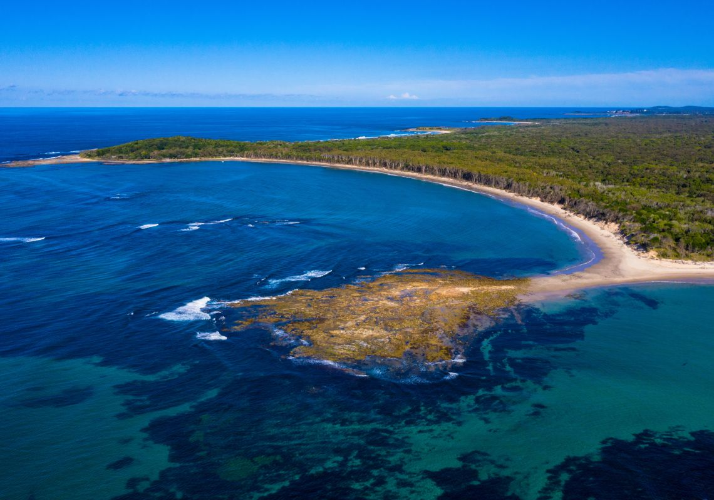
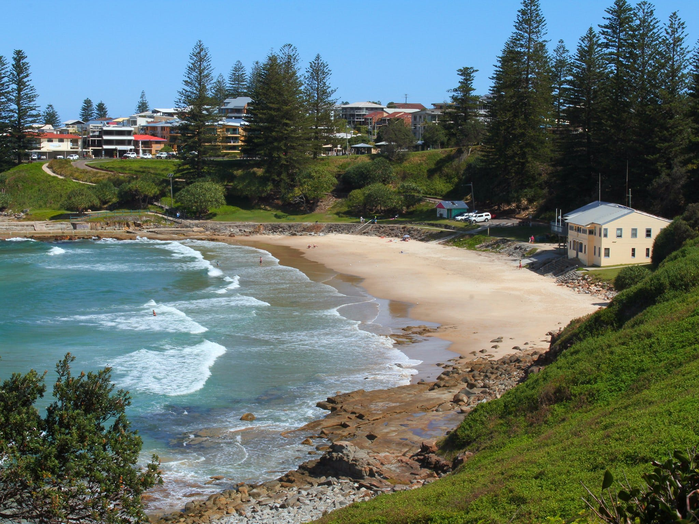
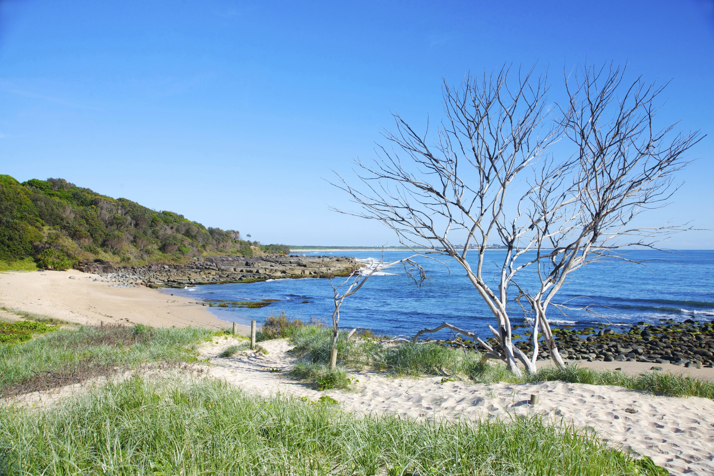

The Region
Walking distance to the CBD, coffee shops & supermarket
Maclean sits at the heart of the Clarence River valley — placing you within easy reach of some of Australia's most beautiful coastal scenery. Whether you're chasing world-class surf at Angourie, the village charm of Yamba, or the untouched wilderness of Yuraygir National Park, the brewery is your ideal base.






A Hidden Gem
Nestled on the stunning coast of New South Wales, Yamba is a hidden gem that promises a perfect escape from the hustle and bustle of city life. With its breathtaking beaches, charming town centre, and a wide range of activities to enjoy, Yamba is the ideal destination for relaxation and adventure.
From the brewery in Maclean, Yamba is just 15 minutes by car — making it the perfect morning coffee run, afternoon swim, or evening dinner destination during your stay.


World-Class Surf
Tucked away on the pristine coastline of New South Wales, Angourie is a tranquil haven for nature lovers and adventurers alike. Angourie Point, known worldwide for its right-hand point break, has been attracting surfers for decades.
Beyond surfing, Yuraygir National Park's beaches — including Spooky Beach and Back Beach — offer serene alternatives. Hike through lush rainforests, traverse rugged headlands, and experience the diverse flora and fauna of this untouched wilderness.
Maclean, NSW · C.1881 · Min. 2 Nights
Reserve Your Dates